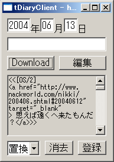

tDiaryClient(仮称)
tDiaryClient(仮称)は、Windows 上の任意のエディターで、
tDiary の日記の更新ができるツール、
利用には Ruby 1.8
と VisualuRuby計画(仮称) が必要です。
よー分からん人は、
ActiveScriptingRubyをインストールするのが近道と思われます。
（MicrosoftInstaller で、みんな入ります…多分）
ダウンロード
準備
環境変数 HOME が差すディレクトリに次のような内容のファイル
.tdiaryrc を用意してください。
url 《利用のtDiaryのURL》
user 《利用のtDiaryの認証ユーザ名》
passwd 《利用のtDiaryの認証パスワード》
（この辺、もうちょっと改良の余地あるなー）
起動
「ruby tdiaryclient.rb」を実行すると、
次のような画面が表示されます。

左上のテキストボックスは、年・月・日を示し、その下の一行は標題です。
ともに編集可能です。
一番下の編集できないテキストエリアには、編集中のテキストが表示されます。
ボタンの意味は以下の通り：
- 「Download」ボタン
- サーバから日記をダウンロードします。
- 「編集」ボタン
- 拡張子.txtに関連付けられたエディタで、日記を編集します。
エディタでの編集中は tDiaryClient のウインドウは消えています。
編集が終わりましたら、エディタを終了させてください。
tDiaryClient のウインドウが復活します。
- 「登録」ボタン
- 編集した日記をサーバにアップロードします
- 「消去」ボタン
- ローカルの草稿を消去します。
- 「追記」or「置換」コンボボックス
- 「追記」の時に「登録」すると、日記が追記登録され、
「置換」の時に「登録」すると、
その日の日記全体が差し変えられます。
- 初期状態では「追記」になっており、サーバから日記がダウンロードされると
「置換」に変わります。また「消去」ボタンを押すと「追記」に戻ります。
（こういう動作をするのは、できるだけ日記の破損を防ぐためです）
- 明示的に変更することも無論可能です。
- 「*」マーク
- 草稿が変更されていることを示します。
ローカル、あるいは、サーバ上の日記に対し、
何らかの破壊を伴う可能性がある操作を行おうとすると、
ダイアログで確認が行われます。
課題
一応、使えるものにはなったけど、
認証あたりの設定ファイルを用意しなくてはいけないところが、
利用にあたってのハードルだなぁ。
あ、もしかしたら、Windows95,98,Me では start コマンドの
オプションの都合、うまくエディタが起動しないかも。。。
リポート求む。
-
エラー処理（さっさとやれよ！）
- Windows95,98,Me での動作検証
- ログインダイアログを作る（今は設定ファイル読み）
- Exerbで、単一バイナリ化
- 草稿をセーブできる機能を付ける（エディタで別ファイルに保存すりゃ済むけど）
- PROXY 対応（やらんでいいという説もある）
- 上戸彩メソッドを活用した命名
変更履歴
0.02 (2004.6.13)
- レイアウト全体を FormDesigner で作り直し。
- 消去ボタン追加。
- 問い合わせダイアログの追加。
- 追加/置換をコンボボックスで切り変えられるようにした。
- 通信部分を別にファイルに分けた(RemoteTD.rb)
- 認証エラー・通信エラーの例外処理を実装
参考リンク